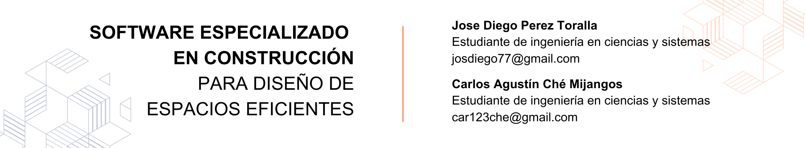

10 Software Especializado en Construcción para Diseño de Espacios Eficientes

10.1 Introducción
En construcción, un buen diseño representa el éxito del proyecto, ya que un pequeño detalle puede representar grandes riesgos tanto de seguridad como en la presentación final del producto. Debido a esto en los últimos años arquitectos, ingenieros, diseñadores y profesionales en construcción se apoyan de software especializado en la modelación de espacios de construcción, estas herramientas informáticas están creadas con el fin de crear modelos digitales en 3D de edificios, estructuras y espacios en general de forma precisa y detallada.
A continuación se explica de forma más detallada que es este software, las características de este tipo de software, tipos de modelado 3D, los beneficios de utilizar este software, una lista y descripción de los softwares de modelado de construcción más utilizados y ejemplos de proyectos exitosos donde se utilizó este tipo de software.
10.2 Artículo
¿Qué es el software de modelación de construcción?
Software de modelación de espacios de construcción, también conocida como BIM (Building Information Modeling) es una herramienta que se ha vuelto popular en los últimos años en construcción, esta herramienta informática permite a los profesionales de construcción crear representaciones precisas de proyectos de construcción. Las herramientas BIM se diferencian del CAD (Computer-Aided Design), anteriormente utilizado, en que en la actualidad con BIM no es necesario una cantidad desproporcionada de dibujos, ya que se pueden hacer representaciones 3D que permiten compartir los datos de forma clara y precisa.
Entre las características de este software encontramos: versatilidad para visualizar los proyectos de cualquier tipo, trabajo en conjunto en el diseño con otros profesionales, adaptación a cualquier sistema de medición ya sea americano o internacional, permite cualquier tipo de análisis ya sea de una parte del diseño en específico, o un conjuntos de partes que hacen una estructura más compleja.
Figura 10.1: CAD Software
Figura 10.2: BIM Software
Figura 10.3: Comparación entre CAD y BIM
Las características mínimas para usar este tipo de software son, un sistema operativo mínimo: Microsoft Windows 7 o una versión superior de 64 bits, Enterprise o Pro. Un Procesador Intel Pentium Xeon o i-Series de uno o varios núcleos, o un AMD equivalente, con tecnología SSE2. Una memoria RAM de 4 GB. Contar con una resolución de vídeo de 1280x1024 y cómo máxima pantalla de ultra alta definición 4K. Y un adaptador de vídeo para gráficos básicos puede ser un adaptador de pantalla compatible con color de 24 bits. Para gráficos avanzados se recomienda una tarjeta gráfica compatible con DirectX 11 y Shader Model.
Un ejemplo sobresaliente de cómo la tecnología BIM y la gestión de construcción avanzada pueden colaborar para transformar la forma en que se planifican y ejecutan proyectos arquitectónicos es el Centro Cultural Juvenil de Nanjing diseñado por Zaha Hadid Architects. La implementación del BIM permitió una visualización detallada, una colaboración mejorada y una planificación precisa, lo que llevó a la construcción exitosa de un edificio ambicioso que desafiaba las convenciones tradicionales de construcción en China.
Tipos de modelado 3D
Como se mencionó, el software de modelación para construcción es versátil, esto se refleja en la diversidad de de programas que existes y los diferentes tipos de estos, entre los cuales podemos encontrar:
Modelación 3D de sólidos
Este tipo de modelación se especializa en la representación de piezas sencillas, las cuales no requieren de algún tipo de procesamiento de optimización elevado. Este tipo de modelación genera objetos tridimensionales utilizando bocetos en 2 dimensiones, ese boceto en 2D se utiliza para la generación de un volumen. Las piezas generadas pueden utilizarse en ensamblaje y procesos de manufactura.
Modelación 3D paramétrico
En este tipo de modelado se tiene más control de los diseños, ya que se agregan conceptos como variables o parámetros, las cuales se permiten modificar en tiempo real, para así poder modificar el objeto virtual sin tener que modificar los bocetos en 2D. En este tipo de modelado podemos agregar restricciones, optimizaciones en los objetos generados, creación de patrones, etc.
Modelado 3D orgánico
Este tipo de modelado es el más utilizado en la actualidad, este permite crear un objeto virtual basándose en un objeto real. Se pueden modelar objetos orgánicos como personas, animales y plantas, etc. El objetivo principal de este tipo de modelado es la libertad de creación.
Hologramas y Realidad Virtual
La integración de hologramas y tecnologías de realidad virtual está redefiniendo la forma en que se diseña eficientemente el espacio en la industria de la construcción. Estas herramientas permiten a los profesionales visualizar proyectos en un entorno virtual inmersivo, lo que facilita la identificación de posibles mejoras en la distribución y el flujo de los espacios.
10.3 Conclusiones
La simulación virtual también brinda la oportunidad de evaluar y ajustar aspectos cruciales, como la iluminación y la ergonomía, antes de que se inicie la construcción física. Esta combinación de tecnologías optimiza la planificación, la comunicación y la toma de decisiones, dando como resultado espacios construidos que se alinean de manera más precisa con las necesidades y expectativas de los usuarios finales.
El software BIM ha transformado la manera en que los profesionales de la construcción abordan los proyectos, permitiendo una representación tridimensional precisa, la colaboración efectiva y la capacidad de realizar análisis detallados. La versatilidad de este software se refleja en sus diversos enfoques de modelado 3D, que van desde el sólido hasta el orgánico, lo que brinda a los diseñadores y constructores una amplia gama de herramientas para crear y gestionar proyectos de manera eficiente e innovadora.
10.4 Referencias
- [1] “A Comparison between CAD and BIM”, ArchiStar Academy, acceso el 13 de agosto de 2023, https://academy.archistar.ai
- [2] “5 software utilizados para el diseño y cálculo de estructuras”, Structuralia, acceso el 13 de agosto de 2023, https://blog.structuralia.com
- [3] “Cómo elegir portátil para usar Revit, 3DS Max, Unreal Engine u otros programas habituales en arquitectura”, The Factory School, https://www.factoria5hub.com